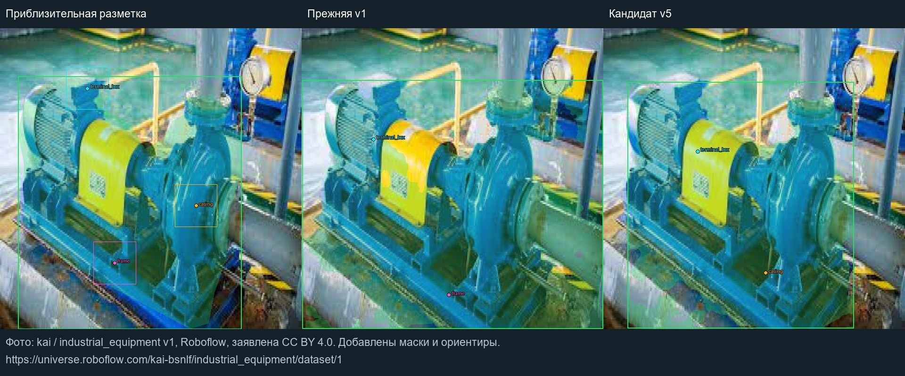
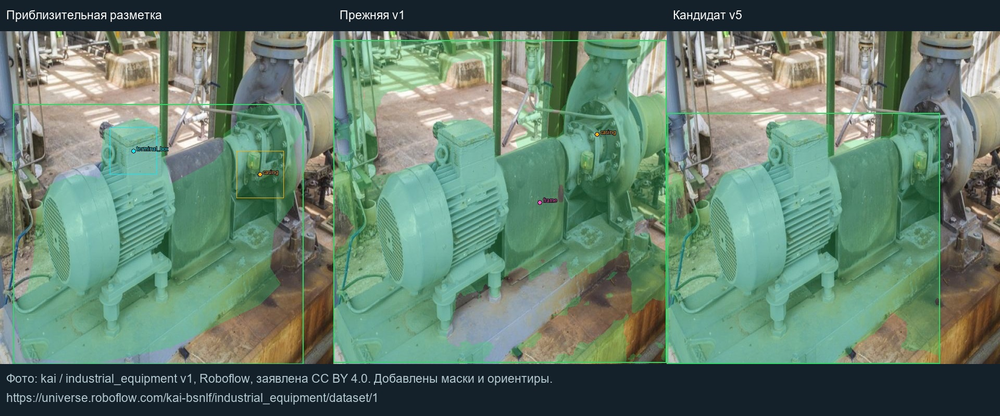
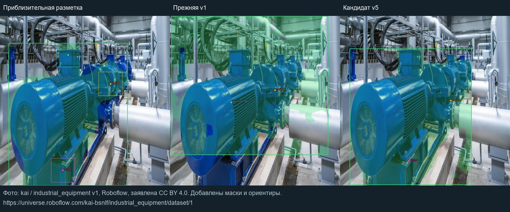

Три новых отложенных изображения из Roboflow. Разметка выполнена с помощью ИИ и визуально проверена; она приблизительная и не сертифицирована инженером. Это малый пилот, не проверка видеопотока или телефона. Пять прежних кадров v3 переведены в обучение и здесь не используются как независимый тест.
| Метрика | v1 | v5 |
|---|---|---|
| Найдено насосов, bbox IoU ≥ 0.5 | 3/3 | 3/3 |
| IoU маски, среднее | 0.493 | 0.765 |
| Ориентиры, ошибка ≤ 10% диагонали | 1/8 | 2/8 |
| Ориентиры в размеченной области | 1/8 | 1/8 |
Показаны все три случая. Неизвестные узлы не считаются физически отсутствующими. Все пороги и правила вывода одинаковы.


